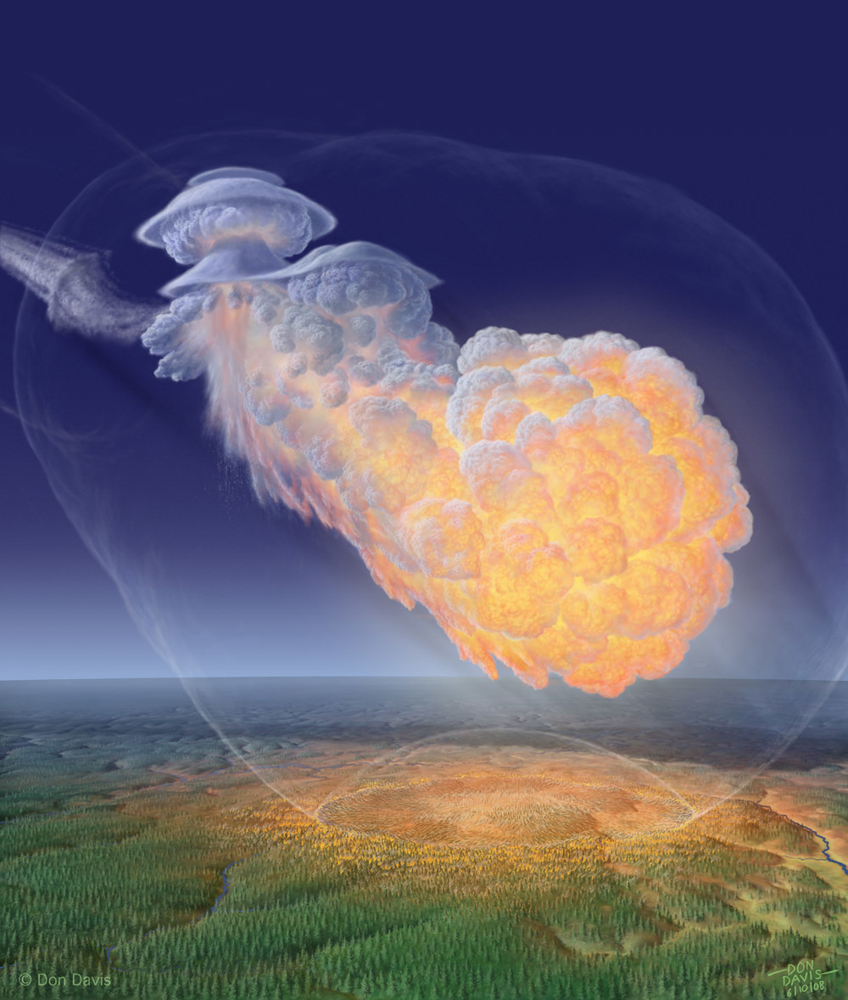
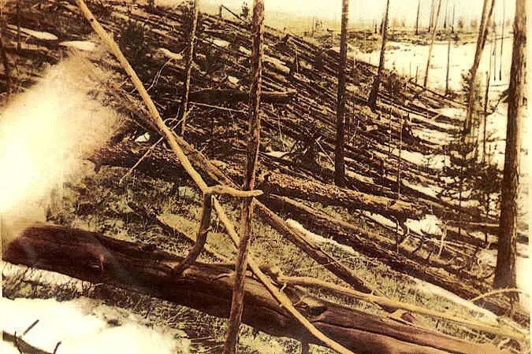
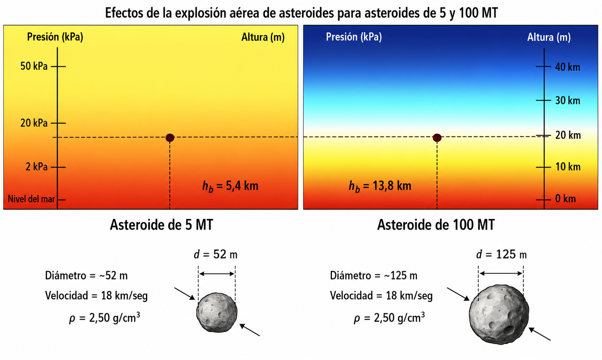
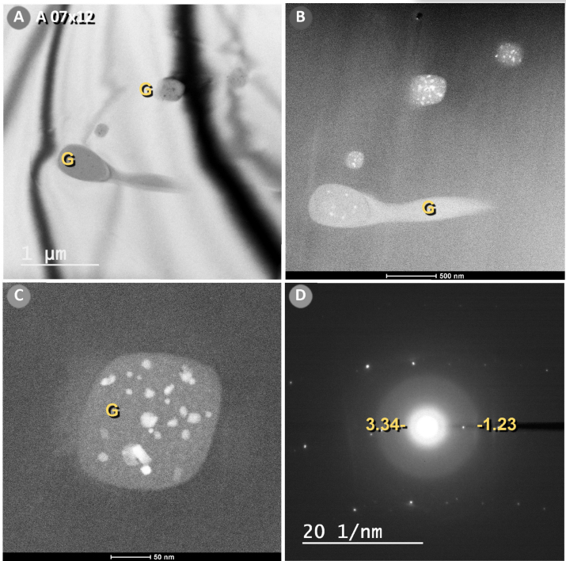
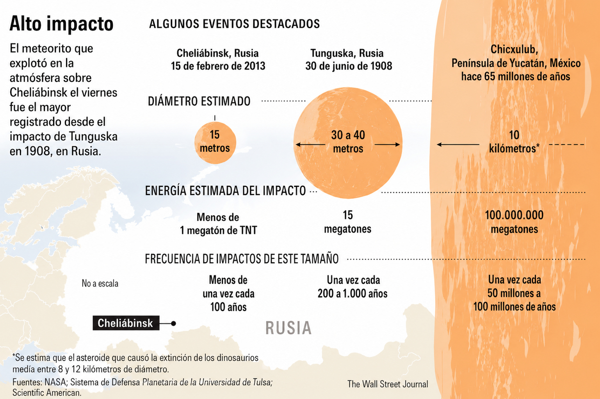
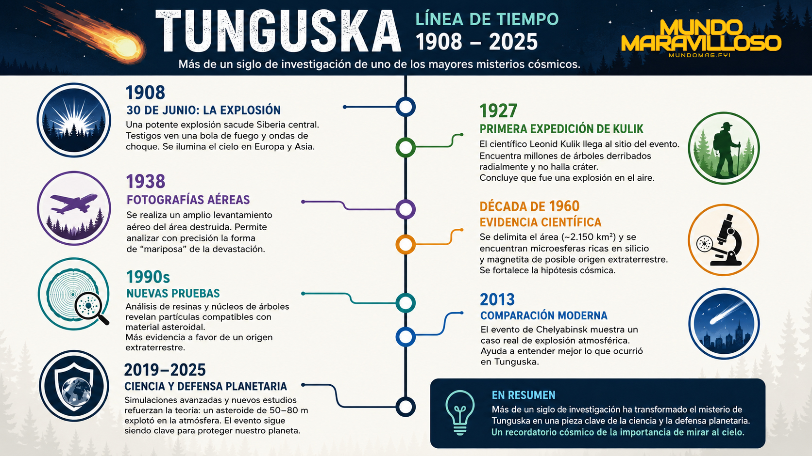
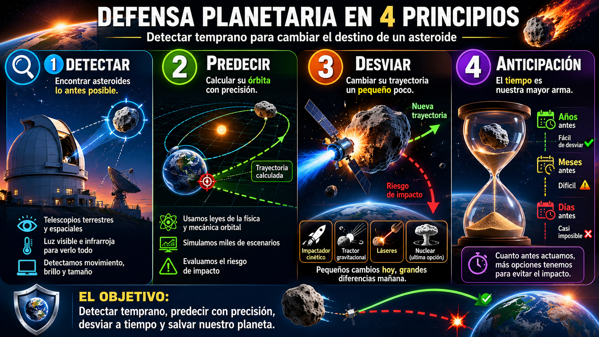
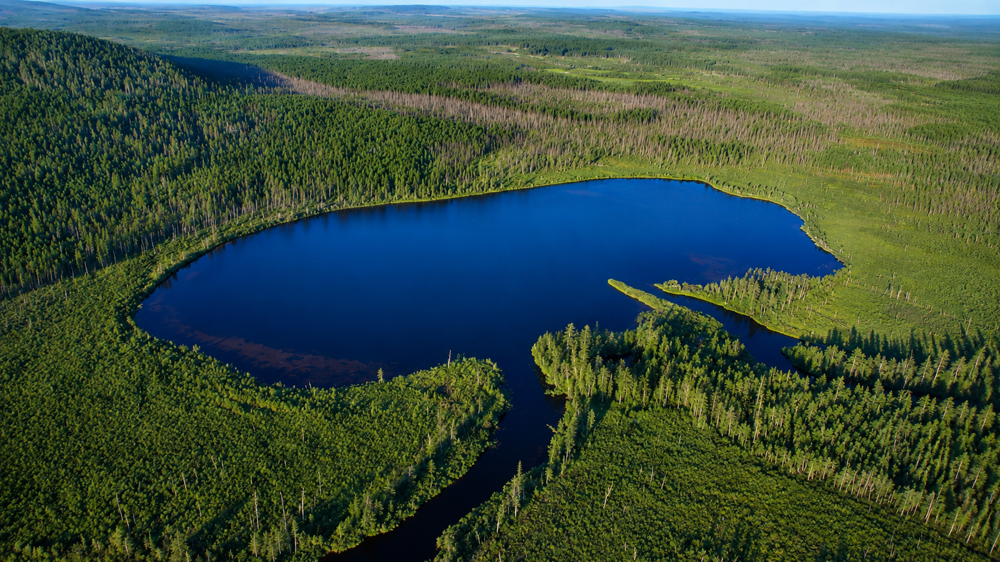

Reconstrucción artística del airburst de Tunguska: un objeto de ~50–100m explota a ~10km de altitud, generando vientos de ~64 m/s en superficie.
Ilustración: Don Davis / Bad Astronomy
El 30 de junio de 1908, una explosión aérea de 10–15 megatones devastó 2,000 km² de bosque siberiano. Cien años después, nuevos datos geoquímicos y simulaciones supercomputacionales están reescribiendo lo que sabemos sobre el mayor impacto cósmico de la historia moderna.
Megatones de TNT
energía liberada
~1,000× Hiroshima · Modelos CFD 2018
Árboles derribados
en ~2,000 km²
Patrón radial · Expedición Kulik 1927
Km de altitud
de la explosión aérea
Sin cráter visible · Airburst

Reconstrucción artística del airburst de Tunguska: un objeto de ~50–100m explota a ~10km de altitud, generando vientos de ~64 m/s en superficie.
Ilustración: Don Davis / Bad Astronomy
A las 07:17 hora local del 30 de junio de 1908, sobre la cuenca del río Podkamennaya Tunguska en Siberia central, el cielo se partió en dos. Los testigos —pocos, dispersos, en su mayoría cazadores y comerciantes de la región Evenki— describieron una bola de fuego "más brillante que el sol", seguida de una serie de explosiones que sacudieron el suelo y rompieron ventanas a cientos de kilómetros. Cuando la atmósfera se calmó, 80 millones de árboles habían caído en un patrón radial que se extendía por más de 2,000 km². No había cráter. No había fragmentos reconocibles. Solo un bosque destrozado y una pregunta que durante un siglo no ha encontrado respuesta definitiva: ¿qué fue?
Este artículo se basa en el "Informe actualizado sobre el Evento de Tunguska (1908)", compilado a partir de estudios peer-reviewed de los últimos ~15 años, incluyendo simulaciones hidrodinámicas (ALE3D, Cart3D), análisis geoquímicos de turba y sedimentos, dendrocronología, y datos de la NASA/ESA. Referencias clave: Wheeler & Mathias (2017), Nemec et al. (2018), Robertson & Mathias (2019), Kletetschka et al. (2025).

Fotografía de Leonid Kulik (1927): árboles derribados radialmente en el epicentro de Tunguska, con los "postes telégrafo" tostados en el centro.
Fuente: Archivo Kulik / Linda Hall Library
Las primeras expediciones científicas no llegaron hasta 1927, casi dos décadas después. Leonid Kulik, un mineralogista soviético, organizó la primera incursión al epicentro esperando encontrar un cráter de impacto y fragmentos metálicos. Encontró algo más extraño: un bosque arrasado en patrones geométricos perfectos, con árboles derribados radialmente hasta 20–40 km del centro, y en el epicentro mismo, miles de troncos tostados pero de pie —los llamados "postes telégrafo"— que parecían haber sido desnudados de ramas por un viento invisible.
La ausencia de cráter confundió a los geólogos. La energía estimada —entre 5 y 30 megatones de TNT, equivalente a más de 1,000 bombas de Hiroshima— sugería un impacto masivo. Pero no había cráter. La conclusión inevitable fue que el objeto se había desintegrado en el aire, a varios kilómetros de altitud, en lo que hoy llamamos un airburst o explosión aérea. La onda de choque, no el impacto directo, fue lo que destruyó la taiga.
// Dato clave
¿Qué es un airburst?
Un airburst ocurre cuando un objeto cósmico entra en la atmósfera a velocidad hipersónica (11–30 km/s), se calienta por fricción, y la presión aerodinámica supera su resistencia mecánica antes de alcanzar el suelo. El objeto se fragmenta, libera su energía cinética en forma de onda de choque, calor y radiación, pero no forma cráter. El 80% de la energía de Tunguska se liberó entre 5 y 15 km de altitud.
El evento de Chelyabinsk (2013), con un objeto de ~20m y ~0.5 Mt, fue un airburst menor que confirmó la física del fenómeno y permitió calibrar los modelos de Tunguska.

Simulaciones de airburst: a mayor energía, mayor altitud óptima de explosión. Tunguska (~10–15 Mt) se ajusta a ~10 km de altitud.
Fuente: ScienceDirect / Simulación CFD de altitud de explosión
Durante décadas, las estimaciones de energía oscilaron entre 5 y 30 megatones. La incertidumbre provenía de dos fuentes: los datos forestales originales eran incompletos, y la física de la fragmentación atmosférica de objetos decamétricos era demasiado compleja para los ordenadores de la época. Todo cambió en los últimos ~15 años con la llegada de hidrocódigos 3D y supercomputadoras.
Boslough et al. (2008) usaron simulaciones SPH/ALE para demostrar que el "chorro incandescente" de un airburst se dirige hacia abajo, intensificando el daño en superficie. Esto implicaba que el objeto podía ser más pequeño de lo pensado —~50m con 3–5 Mt— si se consideraba el efecto de empuje del fuego. Pero otros modelos sugerían lo contrario.
Wheeler & Mathias (2017) simularon 10 millones de escenarios con un modelo de fragmentación estocástico (FCM). Su resultado más probable: ~20 Mt, objeto de 70–90m, explosión a 8–13 km. Nemec et al. (2018), usando CFD de alta fidelidad (Cart3D) con terreno JAXA de 30m de resolución, calibraron vientos de ~64 m/s para el caso de 15 Mt a ~11.5 km —ajustándose mejor al patrón arbóreo observado— frente a solo ~45 m/s para 10 Mt. Robertson & Mathias (2019), con hydrocode ALE3D, concluyeron que ~10 Mt es el valor más probable, con asteroides rocosos o cometas como candidatos igualmente plausibles.
"El caso de 15 megatones produce ráfagas de aire de ~64 m/s en el suelo, comparado con 45 m/s para 10 megatones. Los vientos registrados en campo sugieren condiciones cercanas a lo hallado en 15 megatones."
— Nemec et al. · Simulación CFD Cart3D · NASA Ames · 2018La conclusión de la comunidad científica hoy converge en un rango: 10–20 megatones a ~10 km de altitud, con un objeto de 50–100m de diámetro. Pero la incertidumbre persiste. McMullan & Collins (2019) mostraron que, dependiendo de los parámetros de fragilidad y densidad, casi cualquier valor entre 3 y 50 Mt puede ajustarse a las observaciones.

Microesferas vítreas (FeO, silicato) y cuarzo con deformaciones planares halladas en Tunguska. Requieren presiones de 2–10 GPa y temperaturas ~1,700°C.
Fuente: Kletetschka et al. (2025) / Microscopía SEM-TEM
Mientras las supercomputadoras discutían en el plano teórico, los geoquímicos estaban encontrando evidencia física. Los estudios de turba (peat bog) en los años 90 y 2000 detectaron anomalías isotópicas en el estrato de 1908: enriquecimientos en ^15N y ^13C interpretados como huellas de lluvia ácida generada por nitrógeno atmosférico oxidado en la entrada meteórica. Se estima que precipitó el equivalente a ~200,000 toneladas de nitrógeno sobre Tunguska.
Hou et al. (1998) encontraron iridio 10–20× superior al fondo en capas de turba de 1908, con patrones de tierras raras semejantes a condrita carbonácea —sugiriendo un asteroide de tipo C o un cometa extinto. Kolesnikov et al. (2003) confirmaron estas señales, apoyando una fuente cósmica de baja densidad.
El hallazgo más reciente y potencialmente transformador proviene de Kletetschka et al. (2025). Analizando muestras en un supuesto cráter cercano, hallaron microesferas de vidrio ricas en FeO y silicatos, así como fragmentos de cuarzo con estructuras de deformación planar (PDF) y fracturas de choque. Estos indicios requieren presiones de 2–10 GPa y temperaturas de ~1,700°C. Además, observaron cráteres de ≤9m formados por fragmentos impactantes. Esto sugiere que, contrariamente a la creencia previa, fragmentos del objeto sí alcanzaron el suelo con energía suficiente para chocar y fundir material local.
// El debate del lago Cheko
¿Es el lago Cheko un cráter de impacto?
Durante años, el lago Cheko —a ~8 km al noroeste del epicentro— fue propuesto como posible cráter de impacto por Gasperini et al. Sin embargo, estudios recientes lo han desacreditado: Kavkova et al. (2022) demostraron que el lago Suzdalevo existía antes de 1908 y no tiene sedimentos de impacto. En mayo 2023, investigadores rusos concluyeron que Cheko tiene sedimentos de ≥300 años y forma similar a otros lagos no impactados, formados por procesos periglaciales o cársticos.
La conclusión: no hay cráteres grandes confirmados asociados a Tunguska, apoyando la idea del airburst. Los pequeños cráteres de ≤9m reportados por Kletetschka (2025) son consistentes con fragmentos sobrevivientes de un evento aéreo mayor.
Los anillos de crecimiento de los árboles sobrevivientes cerca del epicentro cuentan una historia precisa. Vaganov et al. (2004) analizaron troncos de árboles a 4–5 km del centro y encontraron anillos más estrechos y tráqueas deformadas en 1908 —indicando defoliación y estrés mecánico súbitos. Curiosamente, no hay pulso de anomalías térmicas radiales en anillos posteriores: los troncos reanudaron crecimiento normal en 1909–10. Esto confirma que el daño fue mecánico (onda de choque) más que térmico (radiación), coherente con cálculos de Johnston & Stern (2018–19) que indican que el pulso térmico en tierra fue relativamente pequeño —la mayor parte de la radiación fue absorbida en la estela del meteoro.

Comparación de eventos de impacto: Chelyabinsk (2013, ~20m, 0.5 Mt), Tunguska (1908, ~50-100m, 10-15 Mt) y Chicxulub (65 Ma, ~10km, 100M Mt).
Fuente: NASA / Wall Street Journal / Scientific American
La composición del objeto sigue siendo la incógnita más grande. Los datos geoquímicos —iridio, tierras raras, isótopos de nitrógeno y carbono— apuntan a una fuente de baja densidad, compatible con una condrita carbonácea (asteroide tipo C, densidad ~2 g/cm³) o un cometa extinto (densidad ≲1 g/cm³). Pero sin fragmentos del núcleo, no hay consenso.
Los modelos recientes encuentran que ambos escenarios son compatibles con Tunguska. Un asteroide rocoso de 50–80m explicaría la falta de fragmentos grandes (se habría desintegrado completamente). Un cometa de mayor tamaño pero menor densidad también encajaría. La ausencia de un cráter principal apoya ambas hipótesis: en un airburst, la mayor parte del material se vaporiza o se dispersa como polvo fino.
| Estudio (Año) | Método | Energía (Mt) | Tamaño / Composición | Altitud (km) |
|---|---|---|---|---|
| Hou et al. | Geoquímico (turba) | >1 | ~60m, condrita C | — |
| Boslough et al. (2008) | SPH/ALE 3D | 3–5 | ~50m, denso | ~5 |
| Wheeler & Mathias (2017) | FCM Monte Carlo | ~20 | 70–90m, genérico | 8–13 |
| Nemec et al. (2018) | CFD Cart3D | ~15 | 70–100m | ~11.5 |
| Robertson & Mathias (2019) | ALE3D | ~10 | 50–80m, roca/cometa | ~10 |
| McMullan & Collins (2019) | Analítico | 3–50 | 25–75m radio | 3–50 |

Cronología de la investigación de Tunguska: de la explosión de 1908 a los microcráteres de Kletetschka en 2025.
Fuente: Mundo Maravilloso / OIEA / NASA
1908
Explosión sobre Tunguska
30 de junio, 07:17 hora local. Explosión aérea sobre la cuenca del río Podkamennaya Tunguska. Ondas sísmicas e infrasonoras globales. Brillo nocturno observable en Europa del Norte.
1927–1929
Expediciones de Kulik
Leonid Kulik organiza las primeras expediciones científicas. Documenta árboles derribados radialmente y "postes telégrafo" tostados. No encuentra cráter ni fragmentos metálicos.
1961
Expedición soviética Fast
Florensky y Fast realizan estudios sistemáticos del patrón arbóreo. Mapas detallados de la zona de caída que siguen siendo referencia hoy.
1998–2003
Análisis geoquímicos
Hou et al. detectan anomalías de iridio en turba. Kolesnikov et al. confirman señales de condrita carbonácea. Rasmussen et al. no encuentran picos de iridio en hielo polar.
2004
Dendrocronología
Vaganov et al. analizan anillos de crecimiento. Encuentran defoliación y estrés mecánico en 1908, pero recuperación rápida. Confirman daño por onda de choque, no calor.
2007–2008
Simulaciones 3D
Boslough et al. (SNL) usan SPH/ALE para modelar el efecto de empuje del chorro de fuego. Sugieren objetos más pequeños (~50m) con energías menores si se incluye este efecto.
2017–2019
Modelado de alta fidelidad
Wheeler & Mathias (FCM, 10M escenarios): ~20 Mt, 70–90m. Nemec et al. (Cart3D CFD): ~15 Mt a ~11.5 km, vientos ~64 m/s. Robertson & Mathias (ALE3D): ~10 Mt como valor más probable.
2022–2023
Desacreditación de Cheko
Kavkova et al. demuestran que Suzdalevo existía antes de 1908. Investigadores rusos (2023) confirman que Cheko tiene ≥300 años de sedimentos. No es cráter de impacto.
2025
Microcráteres y esferas de impacto
Kletetschka et al. hallan microesferas vítreas, cuarzo con PDF, y cráteres de ≤9m. Requieren 2–10 GPa y ~1,700°C. Sugieren fragmentos que sí alcanzaron el suelo.
Tunguska no es solo historia. Es un caso de estudio para la defensa planetaria del siglo XXI. El evento ilustra el peligro real de objetos decamétricos —diámetros de decenas de metros— que entran en la atmósfera con poca o ninguna alerta previa.
La frecuencia de estos eventos es mayor de lo que se pensaba. Mientras objetos >1 km ocurren cada millones de años, choques de ~50m caen cada varios cientos o miles de años. Chelyabinsk (2013, ~20m, ~0.5 Mt) confirmó que incluso objetos pequeños pueden causar daños significativos. Tunguska (~50–100m) subraya que eventos potencialmente destructivos ocurren a escalas de tiempo humanas.

La defensa planetaria requiere detección temprana de NEOs pequeños (~50–100m) y protocolos de mitigación: deflexión orbital o evacuación local.
Ilustración: Mundo Maravilloso / Concepto artístico
// Lecciones para la defensa planetaria
Lo que Tunguska enseña sobre el riesgo cósmico
Detección: Programas como Catalina, Pan-STARRS y el próximo LSST han aumentado la detección de asteroides grandes, pero siguen faltando esfuerzos para objetos ~50m. La directiva del Congreso de EE.UU. para hallar el 90% de objetos >140m debería ampliarse a escalas menores.
Respuesta: Si se detecta un objeto como Tunguska con poco aviso, las opciones son limitadas. Las estrategias deben contemplar no solo deflexión orbital (difícil en minutos/horas), sino planes de evacuación y emergencia locales. Los ejercicios de simulación de la NASA (Planetary Defense Conference) incluyen ahora escenarios tipo Tunguska.
Mitigación: Los avances en simulación (Cart3D, PAIR) mejoran la capacidad para predecir consecuencias de shock, incendio y radiación. Tunguska permite ajustar estos modelos a un caso histórico real.
A pesar del progreso, quedan incógnitas significativas. La composición exacta del objeto sigue desconocida. Falta una reconstrucción precisa del patrón arbóreo con tecnología moderna (drones LIDAR, fotografía aérea de alta resolución). No hay estudios geofísicos extensos (prospección sísmica, georadar) que busquen cráteres menores o estructuras subterráneas inusuales. Y los modelos existentes han usado parámetros aproximados —bosque teórico, perfil atmosférico estándar— que podrían refinarse con datos locales reales.
Las propuestas concretas incluyen: campañas de muestreo con drones y espectrómetros, perforación de testigos profundos en lagos y pantanos, vuelos LIDAR sobre el epicentro, y replicación de experimentos de explosión a escala reducida en bancos de pruebas. Estos esfuerzos, relativamente económicos, podrían resolver preguntas clave: ¿qué parte del objeto sobrevivió, qué lo fragmentó, y qué rutas tomó el material desprendido?
// Preguntas abiertas

La taiga de Tunguska hoy: 117 años después, el bosque ha recuperado gran parte de su cobertura, pero los troncos de 1908 siguen visibles en el paisaje.
Foto: The Siberian Times / V. Romeyko
// Comentarios